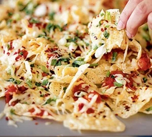

This is a great recipe for Nachos and Cheese

Whip up these speedy nachos for a casual get-together with friends. Crispy tortilla chips are loaded with salsa, cheese, spring onions, chilli and other toppings.
Ingredients
Nachos
Cheese of choice
Recipe
Tip tortilla chips on to a baking tray, pour over salsa and scatter over a few sliced spring onions.
Grate over a good chunk of cheese (fontina is perfect, but cheddar will do). Add a pinch of crushed chilli flakes, then put under a hot grill for about 3 minutes to melt the cheese. Serve with soured cream or guacamole (optional).